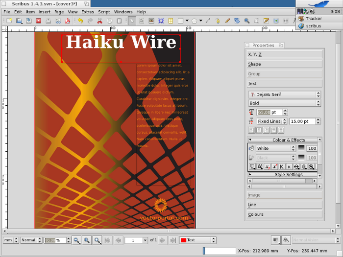

Thanks to the efforts of Giovanni Mugnai Scribus is also available for Haiku.
To run Scribus on Haiku you need to download Scribus for Haiku, which comes in a ZIP archive. Extract the archive to wherever you like (for example your desktopp), then double-click the installer file Scribus1.4.3_Haiku.pkg and click on “Install.” The installer includes all dependencies. It also contains the latest versions of Ghostscript and LittleCMS, so these need not be installed separately.
After installation, an icon/link to Scribus will be present on the Desktop, and you can launch Scribus.
|  |